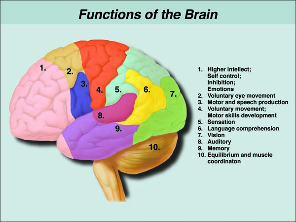
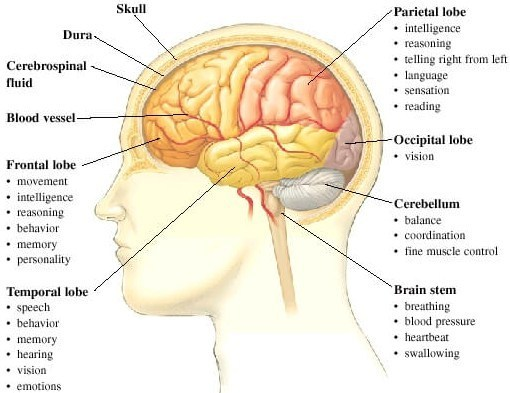

|
In the image on the left it shows what sections of the brain control your movement, emotions, and much more. However, the image on the right shows what the sections of your brain are called.
|
If you click the links down below, it will give you more information on that section of the brain